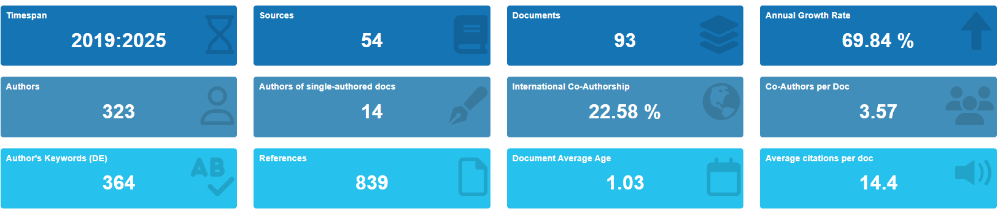
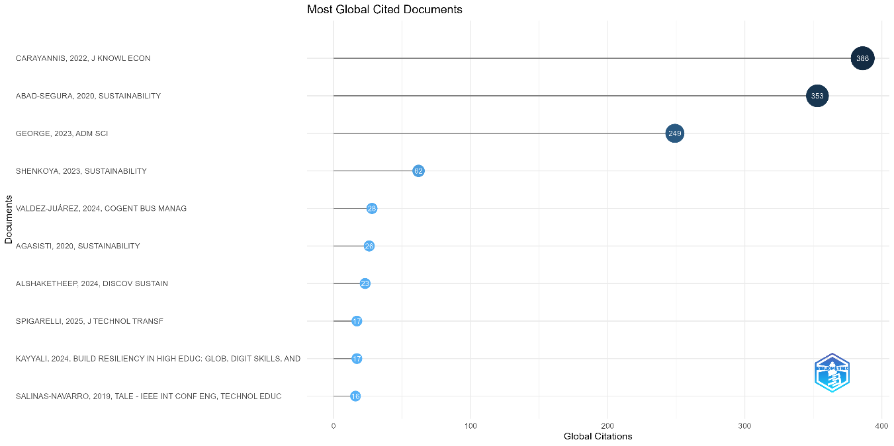
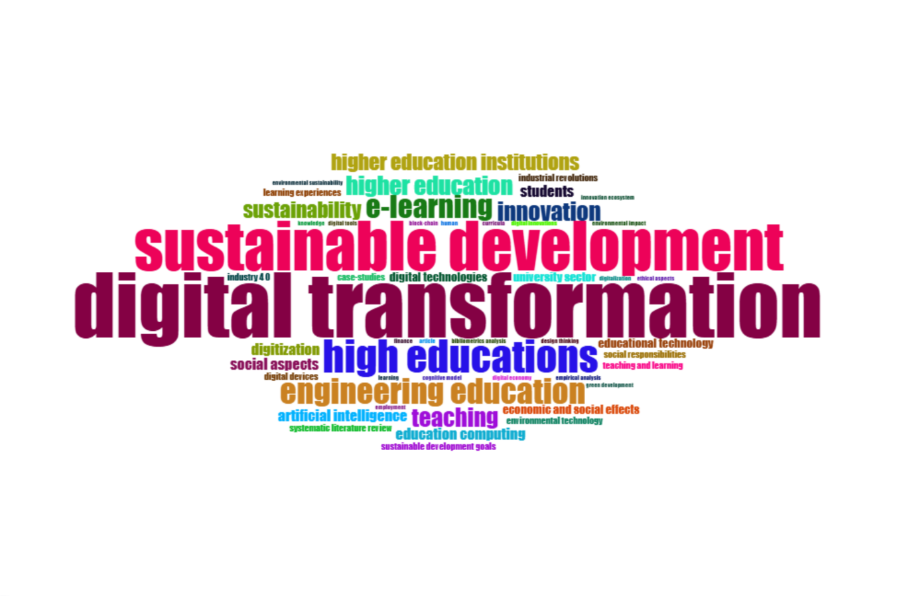
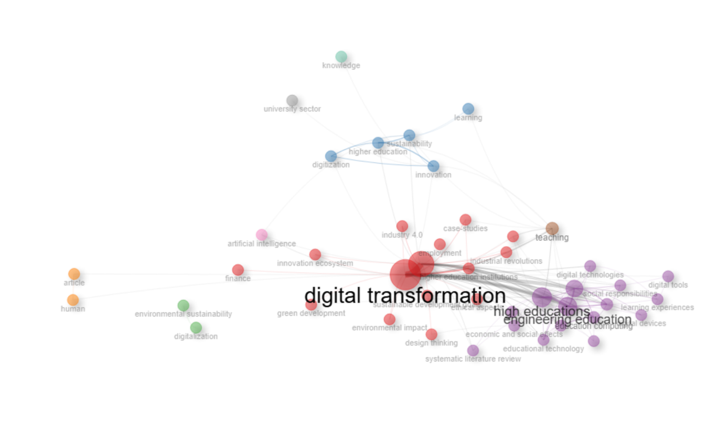

Abstract.
Digital transformation (DT) has become a strategic focus for improving efficiency, optimizing processes, and strengthening sustainability in various sectors, including Higher Education Institutions (HEIs). In this context, HEIs face the challenge of integrating emerging technologies that entail profound structural changes, especially after the impact of the COVID-19 pandemic and the global acceleration of digital dynamics. The purpose of this article is to present a documentary and bibliometric analysis that examines how the field of study related to DT, innovation, and sustainability in higher education has been configured. The research employed an exploratory quantitative approach, using the Bibliometrix software in RStudio to process 93 documents indexed in Scopus between 2019 and 2025. The results showed a strong interrelationship between DT, innovation, and sustainability, highlighting their relevance for sustainable institutional transformation.
Keywords:
Digital transformation, Innovation, Sustainability, HEIs.
Introduction
Digital transformation (DT) is a global phenomenon that has impacted organizations worldwide in constructing organizational strategies for implementing digital technologies. This involves not only technology adoption, but also having the capability to generate strategies and foster cultural change within organizations to innovate, achieve competitive advantage in the market, and satisfy customer needs (Pulido & Ugalde, 2023).
Both public and private organizations have been making significant changes to drive Digital Transformation (DT) with the purpose of automating and simplifying their organizational processes. For Higher Education Institutions (HEIs), adapting to emerging technologies that simultaneously enable efficiency and sustainability has become a priority (Benavides et al., 2020).
With the emergence of numerous information and communication technologies (ICT) today—ranging from enterprise resource planning systems better known as ERP, artificial intelligence (AI), big data, internet of things (IoT), among others—DT has gained stronger momentum and importance for businesses, affecting how companies conduct operations and manage resources. This opens the possibility of adopting strategies that contribute to generating sustainable practices within the firm. However, adopting these technologies is no simple task, particularly regarding sustainability in organizations and specifically in HEIs, as it can imply structural, organizational, and cultural changes (Naranjo-Armijo & Almeida-Blacio, 2024).
Although the literature has addressed digital transformation, innovation, and sustainability in higher education, an isolated relationship among these three fields is still observed in recent scientific production. In this sense, the present study provides a bibliometric analysis of documents indexed in Scopus between 2019 and 2025 to identify the evolution of the field, its main intellectual references, predominant thematic relationships, and emerging research gaps. Thus, it seeks to offer an analytical base for future research on digital transformation as an innovative axis for sustainability in HEIs, posing the following research question: How has scientific production on digital transformation as an innovative axis for sustainability in Higher Education Institutions been configured?
Problem Statement
In recent years, HEIs have faced challenges in adapting to technological changes while striving to be sustainable—that is, implementing technologies that contribute socially, economically, and environmentally (Abad-Segura et al., 2020).
However, implementing a digitalization strategy is no simple task, especially regarding how DT can contribute to sustainability in HEIs. While literature exists on how DT can support HEIs, there remains insufficient information on how DT, supported by innovation, can drive HEI sustainability.
Background
During the 1990s and early 2000s, as technology advanced, its impact on industry produced a paradigm shift in creating new opportunities and business models (Christensen, 2008). From this, the concept of Disruptive Innovation emerged, laying the groundwork for understanding how information technology (IT) can transform an entire organization using digital technologies to gain market competitive advantage (Porter, 2015).
Initially, discussions focused solely on IT-enabled organizational transformation (Wessel et al., 2021), where technology served as a tool to align with strategic goals and produce positive impacts on organizational performance.
On the other hand, in the early 21st century, the concept of DT gained momentum through scientific research by authors at the Massachusetts Institute of Technology (MIT), such as Westerman, Bonnet, & McAfee, who define Digital Transformation as using technologies to improve operations, processes, and corporate performance. Successful digital transformation depends not only on implemented technologies, but on an organization's capacity to innovate in their usage (Westerman et al., 2014), where innovation acts as the driving engine enabling firms to use technologies disruptively and creatively.
Originally, digital transformation emerged to enhance business processes through digital tools for competitive advantage (Özdemir et al., 2023). Today, however, DT is no longer exclusive to private firms but also crucial for HEIs, applying across all public and private organizations. Consequently, HEIs have undergone major changes in the last decade regarding process automation and standardization in academic and administrative realms.
In turn, García-Peñalvo et al. (2020) mention that HEIs represent a multidisciplinary and dynamic field requiring comprehensive changes in processes, organizational culture, and university management models beyond digital technology implementation. This view is shared by Sandoval-Benavides & López-Ornelas (2025), who argue that digital transformation in higher education involves an evolutionary, multidimensional shift spanning social, cultural, and technological domains beyond process automation (digitization).
Likewise, digital technologies play an important role in implementing sustainable practices in companies across various sectors adopting tech-based solutions to optimize resource efficiency (Naranjo-Armijo & Almeida-Blacio, 2024). For example, Google implemented a cooling system in its data centers using water pipes and AI systems to cut energy consumption, demonstrating operational efficiency, economic resource optimization, and environmental care through carbon emission reductions (Google, 2022).
Therefore, the interaction between digital transformation, innovation, and sustainability is key to modernizing and efficiently managing HEIs. Technology implementation improves process quality and administrative/academic efficiency, reduces environmental impact, and fosters innovation and sustainable development in HEIs.
International Context
For HEIs, Digital Transformation has consolidated as a strategic necessity largely due to the COVID-19 pandemic, as this global event accelerated digital technology adoption across all organizations, impacting teaching, academic management, and administrative processes (García-Peñalvo et al., 2020).
A study at Universitat Oberta de Catalunya (UOC) notes that digital technology usage aims to facilitate and improve administrative and teaching-learning processes, considering digital innovation a primary driver of digital transformation (Romero et al., 2023).
At Prince Sultan University (PSU) in Saudi Arabia, a comprehensive model was developed encompassing academic and administrative system integration alongside personalized learning platforms for students and faculty. This approach automated key processes like learning management, performance tracking, and faculty evaluation through a sustainable digital architecture aligned with institutional strategy, driven by a sustainable digital culture, innovative leadership, strategic planning, and active decision-maker engagement (Alenezi & Akour, 2023).
Context in Latin America
According to the OECD, global economies and societies are undergoing digitalization. Latin America and the Caribbean (LAC) experienced rapid digital adoption; mobile broadband expansion allowed more people to join digital networks. By late 2017, 391 million of the region's 628 million inhabitants were connected (~62%), up from ~50% in late 2014 (OECD, 2019). The Inter-American Development Bank (IDB) notes in its report "Towards a Digital Transformation of the Education Sector" that a major challenge for HEIs is driving institutional change to achieve digital maturity in systems and processes to generate innovative models via DT (Rosario et al., 2021).
In Chile, Valdés et al. (2021) point out that HEIs adopted a strategic vision of digital transformation, demonstrating greater adaptability and operational continuity. This represents a cross-cutting strategy impacting sustainability, equity, and efficiency, though digital divides persist in rural areas.
Thus, digital transformation must be conceived as a comprehensive organizational strategy that reinforces institutional sustainability, optimizes administrative processes, and contributes to fairer, more innovative, and resilient education in Latin America.
National and Local Context
In Mexico, digital transformation has become a priority across sectors, including higher education. The national digital transformation strategy promoted by the federal government advocates policies aimed at modernizing public administration, digitizing services, and improving connectivity, which is vital for HEI digital transformation (Agencia de Transformación Digital, Gobierno de México, n.d.).
For instance, Universidad Autónoma de Nuevo León (UANL) implemented a digital strategy to leverage technological and communication resources to facilitate information access and community service (Cavazos-Salazar et al., 2021).
Meanwhile, Universidad de Guadalajara has implemented administrative digitization initiatives since 2010, notably the Integrated Information and University Administration System (SIIAU) for managing academic and administrative processes, the Electronic Degree Platform, and recently the LEO system for student tracking. However, challenges remain around system interoperability, process centralization, and organizational resistance to change (SIIAU, UDG, n.d.).
State of the Art
As a starting point, the state of the art was constructed under a heuristic and hermeneutic approach (Londoño-Palacio et al., 2014), involving an initial phase for searching and gathering scientific literature, followed by a phase for identifying trends, understanding, and interpreting collected data.
Institutional repositories from Latin American and Spanish universities with notable progress in digital transformation were consulted, along with technical reports from international bodies like the Inter-American Development Bank (IDB) and the Organisation for Economic Co-operation and Development (OECD).
Analysis of the state of the art revealed that scientific literature has evolved significantly around three key concepts regarding digital transformation (DT) in higher education institutions (HEIs): sustainability, innovation as a strategic axis, and institutional change catalyzed by the COVID-19 pandemic.
Digital Transformation and Sustainability in HEIs
Shenkoya & Kim (2023) highlight that universities face a major challenge in integrating innovative Industry 4.0 technologies; nevertheless, study findings show DT positively impacted students and is driving sustainability in higher education (Shenkoya & Kim, 2023).
Abad-Segura et al. (2020) show that university digitization involves not only incorporating emerging technologies, but structural reconfiguration aimed at strengthening learning, institutional efficiency, and alignment with Sustainable Development Goals. Their study highlights that digital transformation in higher education must be understood from a sustainable management perspective linking technology adoption to social, economic, and environmental goals.
Gorina et al. (2023) state that higher education sustainability requires incorporating strategies into educational content concerning economic, social, and environmental aspects. They reinforce that educational sustainability requires robust institutional policies and trained faculty to lead effective digitization.
Furthermore, sustainability in HEIs has conceptually evolved beyond financial matters into a broader framework. According to Findler et al. (2019), university sustainability comprises at least three interrelated dimensions: environmental, social, and economic, each with specific metrics and indicators. This multidimensional vision is supported by Leal-Filho et al. (2025), who argue that 21st-century universities must adopt sustainability as a fundamental, cross-cutting principle across all core functions.
In summary, DT requires new pedagogical and organizational models with a student-centered focus and a strategic vision capable of integrating digital competencies, organizational culture, and efficient clean technology usage to consolidate a more sustainable educational model aligned with global demands (Abad-Segura et al., 2020).
Innovation and Digital Transformation in HEIs
Carayannis & Morawska-Jancelewicz (2022) introduce a key perspective for understanding DT in HEIs through business model innovation and new technology adoption. They propose that DT should be seen as an institutional redesign of processes, strategy, and knowledge rather than a simple technological reaction. Flexible governance frameworks are required for continuous adaptation to tech and social change, reinforcing that structural innovation is essential for effective, sustainable digital transformation.
Espina-Romero et al. (2024) mention that combining innovation and digital competencies is relevant for facilitating technology integration in organizations to advance sustainability and meet current trends.
Agasisti et al. (2020) emphasize that during the COVID-19 crisis, innovation became a strategic resource for HEIs, innovating in tools, pedagogical models, administrative structures, and sustainability strategies.
In summary, findings from the state of the art invite research from a complex, holistic view, recognizing the need for studies analyzing digital transformation not merely as technological innovation, but as a strategic path toward institutional sustainability in higher education.
Methodology
This study was conducted using a quantitative approach with bibliometric analysis techniques (Zupic & Čater, 2015) to examine the evolution and characteristics of scientific literature on digital transformation, sustainability, and innovation in higher education institutions (HEIs).
Analysis Techniques
The literature review was performed via bibliometric analysis based on contributions by Aria & Cuccurullo (2017), who propose using the Bibliometrix software in RStudio as a robust tool for systematic and reproducible bibliometric studies.
For this research, 93 documents were retrieved from Scopus databases (Burnham, 2006), including articles, book chapters, journals, and conference papers published between 2019 and 2025 using search strings such as: (TITLE-ABS-KEY (Innovation) AND TITLE-ABS-KEY ("digital transformation" ) AND TITLE-ABS-KEY (sustainability) AND TITLE-ABS-KEY ("Higher education institutions") OR TITLE-ABS-KEY (“Higher education") OR TITLE-ABS-KEY (universities) ) AND PUBYEAR > 2018 AND PUBYEAR < 2026. English and Spanish scientific articles, books, and conference proceedings explicitly linked to higher education institutions were selected.
The adopted methodology strengthened the study's foundation by providing a structured, empirical, and verifiable overview of the state of the art. Bibliometric analysis yielded key findings and organized the field conceptually, serving as a vital tool to support proposals, identify research gaps, and build future academic lines.
Results and Discussion
Figure 1 presents a general overview of the data generated by Bibliometrix, showing an annual growth rate of 69.84% between 2019 and 2025, indicating rising interest in DT related to innovation and sustainability.
Figure 1.
General Analysis

Source: bibliometrix
Additionally, an average of 14.4 citations per document was observed, demonstrating active research interest while leaving room for broader future investigations. A total of 323 authors were identified, with 14 documents belonging to a single author.
Among the most notable findings, the article with the highest citation count was by Carayannis & Morawska-Jancelewicz (2022) with 386 citations, followed by Abad-Segura et al. (2020) with 356 citations, and George & Wooden (2023) with 249 citations, as shown in Figure 2. These key articles emphasize that DT in HEIs goes beyond digital tool implementation, requiring a clear and sustainable innovation strategy.
Figure 2.
Most Cited Articles

Source: bibliometrix
Figure 3.
Most Relevant Words

Source: bibliometrix
Finally, Figure 4 illustrates key conceptual relationships among keywords in literature covering digital transformation in higher education, higher education institutions, sustainable development, and sustainability.
Figure 4.
Co-occurrence Word Map

Source: bibliometrix
The most prominent central node is “digital transformation”, whose connections to multiple concepts reinforce its role as a central thematic axis. Relevant semantic clusters radiate from this node:
- Red Cluster (center): includes terms like industry 4.0, employment, innovation ecosystem, green development, and environmental impact, indicating DT is closely tied to the labor market, innovation ecosystems, and environmental sustainability (Carayannis & Morawska-Jancelewicz, 2022).
- Light Blue Cluster: highlights terms like higher education, digitization, innovation, and learning, showing a strong academic focus on university environments where innovation and digital learning are central (Gorina et al., 2023).
- Purple Cluster: gathers around engineering education, educational technology, digital tools, and learning experiences, reflecting specific interest in DT within technical and pedagogical fields. This aligns with recent studies connecting digital skills with curricular sustainability (Espina-Romero et al., 2024).
- Peripheral Clusters (green, pink, orange): feature terms such as artificial intelligence, finance, environmental sustainability, human, and article, representing emerging subtopics that are currently peripheral but hold potential for future consolidation (George & Wooden, 2023).
This structural mapping confirms the field's relevance while highlighting unexplored subtopics—such as the link between artificial intelligence and sustainability—that warrant further empirical research.
Conclusions
Digital transformation should not be viewed merely as technology adoption, but as a comprehensive strategy involving organizational redesign, cultural change, innovation, and commitment to sustainability.
Findings show that highly cited studies agree DT is effective only when integrated with a clear institutional strategy grounded in leadership, organizational culture, and advanced digital capabilities (Carayannis & Morawska-Jancelewicz, 2022; Abad-Segura et al., 2020), enabling HEIs to become more efficient and sustainable.
Furthermore, the COVID-19 pandemic made evident that HEIs must strengthen technological infrastructure, leadership, and innovative strategies for resilience. It is not just about adopting top technologies or automating processes, but executing profound internal cultural, technological, and social transformation (Romero et al., 2023).
Finally, this study proposes DT as a strategic axis for achieving more resilient, sustainable, and innovative higher education. Digital technology integration must be coupled with continuous innovation and sustainable governance mechanisms. Future research should expand literature searches to other databases to further explore emerging technologies and their impact on HEI sustainability.
References
Abad-Segura, E., González-Zamar, M.-D., Infante-Moro, J. C., & García, G. R. (2020). Sustainable Management of Digital Transformation in Higher Education: Global Research Trends. Sustainability, 12(5). https://doi.org/10.3390/su12052107
Agencia de Transformación Digital, Gobierno de México. (n.d.). Agencia de Transformación Digital y Telecomunicaciones. Retrieved November 11, 2025, from https://www.gob.mx/atdtV2/
Alenezi, M., & Akour, M. (2023). Digital Transformation Blueprint in Higher Education: A Case Study of PSU. Sustainability, 15(10), Article 10. https://doi.org/10.3390/su15108204
Aria, M., & Cuccurullo, C. (2017). bibliometrix: An R-tool for comprehensive science mapping analysis. Journal of Informetrics, 11(4), 959–975. https://doi.org/10.1016/j.joi.2017.08.007
Benavides, L. M. C., Tamayo Arias, J. A., Arango Serna, M. D., Branch Bedoya, J. W., & Burgos, D. (2020). Digital Transformation in Higher Education Institutions: A Systematic Literature Review. Sensors, 20(11), Article 11. https://doi.org/10.3390/s20113291
Cavazos-Salazar, R. L., Fraire-Santiesteban, R. G., & Suárez-Escalona, R. (2021). Transformación digital de la UANL: Implementación de la estrategia digital. Revista CienciaUANL, 24(109), 18–21.
Christensen, C. M. (2008). The innovator’s dilemma: When new technologies cause great firms to fail (Rev., updated, and with a new chapter, [Nachdr.]). Harvard Business School Press. http://lib.ysu.am/open_books/413214.pdf
Espina-Romero, L., Ríos Parra, D., Noroño-Sánchez, J. G., Rojas-Cangahuala, G., Cervera Cajo, L. E., & Velásquez-Tapullima, P. A. (2024). Navigating Digital Transformation: Current Trends in Digital Competencies for Open Innovation in Organizations. Sustainability, 16(5), 2119. https://doi.org/10.3390/su16052119
Findler, F., Schönherr, N., Lozano, R., Reider, D., & Martinuzzi, A. (2019). The impacts of higher education institutions on sustainable development: A review and conceptualization. International Journal of Sustainability in Higher Education, 20(1), 23–38. https://doi.org/10.1108/IJSHE-07-2017-0114
García-Peñalvo, F. J., Corell, A., Abella-García, V., & Grande, M. (2020). La evaluación online en la educación superior en tiempos de la COVID-19. Education in the Knowledge Society (EKS), 21, 26–26. https://doi.org/10.14201/eks.23086
George, B., & Wooden, O. (2023). Managing the Strategic Transformation of Higher Education through Artificial Intelligence. Administrative Sciences, 13(9), 196. https://doi.org/10.3390/admsci13090196
Google. (2022, November 21). Our commitment to climate-conscious data center cooling. Google. https://blog.google/outreach-initiatives/sustainability/our-commitment-to-climate-conscious-data-center-cooling/
Gorina, L., Gordova, M., Khristoforova, I., Sundeeva, L., & Strielkowski, W. (2023). Sustainable Education and Digitalization through the Prism of the COVID-19 Pandemic. Sustainability, 15(8), 6846. https://doi.org/10.3390/su15086846
Leal-Filho, W., Viera Trevisan, L., Sivapalan, S., Mazhar, M., Kounani, A., Mbah, M. F., Abubakar, I. R., Matandirotya, N. R., Pimenta Dinis, M. A., Borsari, B., & Abzug, R. (2025). Assessing the impacts of sustainability teaching at higher education institutions. Discover Sustainability, 6(1), 1–22. https://doi.org/10.1007/s43621-025-01024-z
Londoño-Palacio, O. L., Maldonado Granados, L. F., & Calderón Villafáñez, L. C. (2014). Guías para construir estados del arte. MINISTERIO DE EDUCACION. https://repositorio.minedu.gob.pe/handle/20.500.12799/4637
Naranjo-Armijo, F. G., & Almeida-Blacio, J. H. (2024). Transformación Digital y Sostenibilidad: Un Nuevo Paradigma en la Administración de Empresas. Código Científico Revista de Investigación, 5(E3), Article E3. https://doi.org/10.55813/gaea/ccri/v5/nE3/323
Porter, M. E. (2015). Ventaja competitiva. Grupo Editorial Patria.
Pulido, M. I. M., & Ugalde, L. V. (2023). La transformación digital como herramienta para la innovación en una PyME de seguridad tecnológica: Digital transformation as a tool for innovation in a technological security PyME. LATAM Revista Latinoamericana de Ciencias Sociales y Humanidades, 4(2), Article 2. https://doi.org/10.56712/latam.v4i2.976
Romero, M., Romeu, T., Guitert, M., & Baztán, P. (2023). La transformación digital en la educación superior: El caso de la UOC. RIED-Revista Iberoamericana de Educación a Distancia, 26(1), 163–179. https://doi.org/10.5944/ried.26.1.33998
Rosario, A. C. L., Yaacov, B. B., Segura, C. F., Ortiz, E. A., Heredero, E., Botero, J., Brothers, P., Payva, T., & Spies, M. (2021). Higher Education Digital Transformation in Latin America and the Caribbean. IDB Publications. https://doi.org/10.18235/0003829
Sandoval-Benavides, V. L., & López-Ornelas, M. (2025). Transformación digital en la educación superior desde la perspectiva internacional: Mapeo sistemático de la literatura. Texto Livre, 18, e51996. https://doi.org/10.1590/1983-3652.2025.51996
Shenkoya, T., & Kim, E. (2023). Sustainability in Higher Education: Digital Transformation of the Fourth Industrial Revolution and Its Impact on Open Knowledge. Sustainability, 15(3), 2473. https://doi.org/10.3390/su15032473
SIIAU, UDG. (n.d.). Sistema Integral de Información y Administración Universitaria. Retrieved November 3, 2025, from https://siiau.udg.mx/
Valdés, K. N., y Alpera, S. Q., & Cerdá Suárez, L. M. (2021). An Institutional Perspective for Evaluating Digital Transformation in Higher Education: Insights from the Chilean Case. Sustainability, 13(17), Article 17. https://doi.org/10.3390/su13179850
Wessel, L., Baiyere, A., Ologeanu-Taddei, R., Cha, J., & Jensen, T. B. (2021). Unpacking the Difference Between Digital Transformation and IT-Enabled Organizational Transformation. Journal of the Association for Information Systems, 22(1). https://doi.org/10.17705/1jais.00655
Westerman, G., Bonnet, D., & McAfee, A. (2014). The Nine Elements of Digital Transformation. MIT Sloan Management Review, 55(3), 1–6.
Zupic, I., & Čater, T. (2015). Bibliometric Methods in Management and Organization. Organizational Research Methods, 18(3), 429–472. https://doi.org/10.1177/1094428114562629
License: This work is licensed under a Creative Commons Attribution-ShareAlike 4.0 International License (CC BY-SA 4.0).